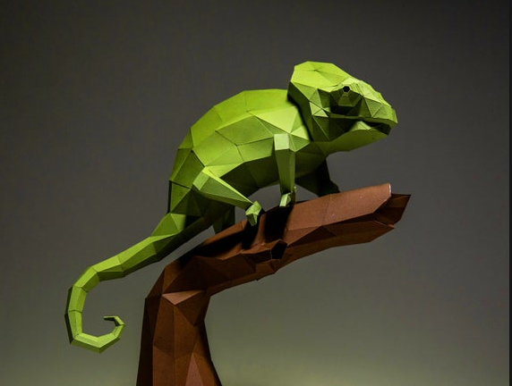
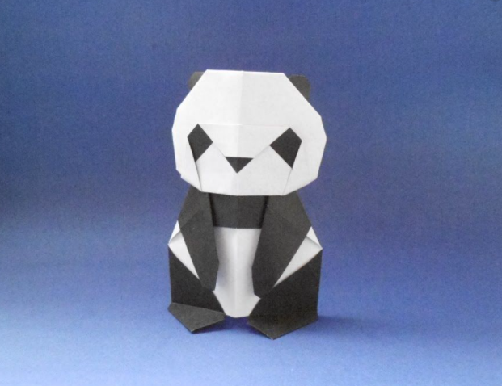

Interesting facts about Chameleon
- Chameleons are reptiles of the iguana suborder
- Cnahging clour is an important part of communication among Chameleons
- Most Chameleons have a prehensile tail that they use to wrap around the tree branches

Interesting facts about Pigeon
- Pigeons are very complex and intelligent animals
- Pigeons are renowed fro their navigational abilities
- Pigeons have exellent hearing abilities

Interesting facts about Pigeon
- A giant panda is much bigger than your teddy bear
- Giant pandas are good at climbing trees and can also swim
- Pandas go from pink to white and black
Interesting facts about Pigeon
- The term bear-hug was first recorded in 1846.
- The Teddy Bears' Picnic song was originally called The Teddy Bear Two Step.
- Teddy Bears are lovely.